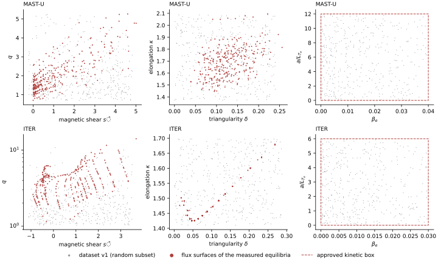

Datasets
Purpose
Training data for the transport surrogates of M3: TGLF fluxes on points that cover the operating space of each machine, written once, versioned, with provenance that binds each file to the sampling space and the equilibria it came from (brief invariant 6, immutable versioned datasets). The M2 acceptance criteria are: the dataset loads, its provenance validates, and its sampled domain is documented and plotted against the intended operating space.
Two datasets, one per machine (owner, 2026-10-02): MAST-U and ITER. They share the code, the TGLF settings and the file format, and differ in geometry, species and kinetic ranges. Each carries its own tags on the run tracker, so either can be selected alone or both pooled at training time.
TGLF
TGLF is a quasilinear model of drift-wave turbulence from General Atomics’ GACODE suite, github.com/gafusion/gacode, Apache-2.0 (Tier A). For each point it solves a gyro-fluid eigenvalue problem over a grid of binormal wavenumbers and maps the linear growth rates to fluxes through a saturation rule. We use GACODE commit f34a9dd, built for the cluster’s CPU nodes (Zen 4), and call TGLF in-process through tglf2py, the wrapper TORAX uses, so the datasets and any later TGLF run inside TORAX use the same binary. CGYRO, the nonlinear gyrokinetic code from the same suite, is built from the same commit for spot checks of TGLF at M4 (OQ-15 c).
Install checks (TGLF 9/9 regression cases; tglf2py wrapper 11/11; TORAX TGLF transport-model tests 3/3; CGYRO 21/21C-069). TGLF’s regression cases run through the standalone binary and through the wrapper; TORAX’s TGLF transport-model tests; CGYRO’s regression suite. TORAX 1.4.3 needs one upstream TGLF fix, applied as a patch to the installed package and reapplied whenever the environment is rebuilt.
Settings. One fixed set for all datasets, chosen to match the TGLF-based network that ships with TORAX so the two can be compared:
| setting | value | meaning |
|---|---|---|
SAT_RULE |
2 | saturation rule SAT2 |
USE_BPER, USE_BPAR |
on, on | perpendicular and parallel magnetic perturbations (electromagnetic) |
USE_MHD_RULE |
off | |
UNITS |
CGYRO | normalisation by Bunit |
GEOMETRY_FLAG |
1 | Miller geometry |
NS |
3 | electrons, main ion, one impurity |
KYGRID_MODEL, NKY |
4, 19 | wavenumber grid |
NMODES, NBASIS_MIN, NBASIS_MAX, NXGRID |
5, 2, 6, 16 | |
XNU_MODEL |
3 | collision model |
ALPHA_ZF, ALPHA_E, ALPHA_P |
1, 1, 1 | zonal-flow mixing, E×B and parallel-flow shear on |
All other inputs take TGLF’s defaults.
Cost (2.2-2.5 s per case alone, 2.6 s median in a 64-worker pool; about 700 core-hours per 10^6 casesC-068). Measured on 512 points drawn from the sampling spaces below, one case per core. In the 256-worker dataset jobs the mean was 3.3 s per case (91.6 core-h (MAST-U) and 92.4 core-h (ITER); 3.3 s per case mean; 35 min wall per jobC-074), about a quarter above the 64-worker figure; the cause on a fully loaded node was not measured.
TGLF inside TORAX (fails at the first step: NaN fluxes on the axis face, about 10^6 gyro-Bohm units on the edge face (K-015)C-070, ceiling K-015). On TORAX’s ITER hybrid example with TGLF as the transport model, the first step fails: NaN on the axis face and about 106 gyro-Bohm units on the edge face, after which TGLF stops on a zero impurity charge. TORAX’s QLKNN setup restricts transport to a radial domain that excludes the axis and the pedestal; the TGLF run did not. The datasets do not depend on this, since they call TGLF directly.
Sampling space
Inputs
A point is TGLF’s local input set at one radius, in TGLF’s names and TORAX’s conventions: lengths normalised to the minor radius \(a\) of the last closed flux surface, species 1 = electrons, 2 = main ion, 3 = impurity, masses relative to the deuteron. The inputs fall into three groups.
Geometry, measured. RMAJ_LOC, DRMAJDX_LOC, KAPPA_LOC, S_KAPPA_LOC, DELTA_LOC, S_DELTA_LOC, Q_LOC, SHAT. These are computed exactly as TORAX computes them from its geometry object when it builds TGLF inputs (checked against TORAX’s own input builder), on every flux-surface face with \(0.1 \le r/a \le 0.9\), for a set of equilibria per machine:
- MAST-U: a 60-point Latin hypercube over FreeGSNKE’s MAST-U-like machine (plasma current, pressure scaling, vacuum field, profile exponents and three coil-current multipliers); 42 equilibria accepted (10 did not converge, 5 rejected, 3 timed out). LCFS elongation 1.71–2.28, aspect ratio 1.53–1.77, q95 3.8–9.8. Triangularity and its shear are taken from \(r/a \ge 0.6\) only: inside that, FreeGSNKE’s triangularity on its default grid is grid noise (K-013).
- ITER: TORAX’s ITER hybrid equilibrium (EQDSK) at flat top, plus the q profiles of TORAX’s current ramp-up example (plasma current 3 to 10.5 MA, 41 output times) on the same shape. One shape only (K-016).
Each sampling range is the measured 1st–99th percentile, widened by 5% of its span on each side, rounded outward to 0.01, with triangularity and its shear floored at 0, elongation at 1 and q at 0.7. A unit test re-derives the ranges from the stored envelope, so the configuration cannot drift from the measurement.
Kinetic, approved. Proposed by the agent, approved per machine by the owner (OQ-16 a). The generator refuses to write a dataset for a region whose kinetic block is not marked approved.
| input (lengths over \(a\)) | MAST-U | ITER |
|---|---|---|
\(a/L_{T_e}\), \(a/L_{T_i}\) (RLTS_1, RLTS_2) |
0–12 | 0–6 |
\(a/L_{n_e}\) (RLNS_1) |
−2 to 8 | −1 to 3 |
\(T_i/T_e\) (TAUS_2) |
0.5–3 | 0.7–1.5 |
\(\beta_e\) (BETAE) |
0–0.04 | 0–0.03 |
collisionality XNUE, log-uniform |
10−2–3 | 10−3–0.1 |
| \(Z_\mathrm{eff}\) | 1–3 | 1.2–2.5 |
E×B shear VEXB_SHEAR |
−1 to 1 | −0.2 to 0.2 |
| main ion; impurity | D; C | D-T as one ion of mass 2.515 u; Ne |
Q_LOC sampling |
uniform | log-uniform |
| αMHD cap | 4 | 2 |
The radius RMIN_LOC (\(r/a\)) is sampled uniformly over 0.1–0.9.
Derived, never sampled. From quasi-neutrality with a main ion of charge 1 and one impurity of charge \(Z\): \(n_3/n_e = (Z_\mathrm{eff}-1)/(Z(Z-1))\), \(n_2/n_e = 1 - Z\,n_3/n_e\). Ion and impurity gradients equal the main-ion ones, and \(T_3 = T_2\) (TORAX does not evolve the impurity temperature either). Then
\[ \texttt{Q\_PRIME\_LOC} = \frac{q^2}{(r/a)^2}\,\hat s, \qquad \texttt{P\_PRIME\_LOC} = -\frac{q}{r/a}\,\frac{\beta_e}{8\pi}\sum_s \frac{n_s}{n_e}\frac{T_s}{T_e} \left(\frac{a}{L_{n_s}} + \frac{a}{L_{T_s}}\right), \]
\[ \alpha_\mathrm{MHD} = q^2\,\frac{R}{a}\,\beta_e \sum_s \frac{n_s}{n_e}\frac{T_s}{T_e} \left(\frac{a}{L_{n_s}} + \frac{a}{L_{T_s}}\right) = -q^2 R\,\frac{d\beta}{dr}, \]
with \(\beta\) on Bunit. The P_PRIME_LOC expression is TORAX’s \(10^{-7}\,(dp/dr)\,q a^2/(r B_\mathrm{unit}^2)\) written in TGLF’s dimensionless inputs, checked against TORAX in a physics test.
The αMHD cap
Drawn independently, high \(\beta_e\) and steep gradients combine into pressure gradients far beyond ballooning stability. In the timing run, four MAST-U points of this kind returned 104–105 gyro-Bohm units. Over the uncapped box, αMHD has median 4.1 (MAST-U) and 2.9 (ITER), and 99th percentile 49 and 81. Version 1 rejects points above a fixed cap per machine (OQ-16 c). The cap does not depend on the magnetic shear, although an \(s\)–\(\alpha\) ballooning boundary does (K-017). Because αMHD grows as \(q^2\), the cap also removes most high-q points on ITER (MAST-U 0.490 kept (220936 drawn), ITER 0.425 (258597 drawn); kept mean beta_e 23-25% below the box mean on both; kept median q 1.90 (MAST-U) and 1.73 (ITER, sampled log-uniform over 1.02-11.1)C-073).
Algorithm 1: sampling a region (as in tkit.datasets.tglf_dataset.sample_region)
input: region ranges R (geometry + kinetic), log-uniform set L, cap A, seed s, target n
kept = [], drawn = 0, k = 0
while |kept| < n:
acc = |kept| / drawn (1 if drawn = 0)
m = max(64, ceil(1.2 (n - |kept|) / max(acc, 1e-3)))
U = LatinHypercube(dim = 1 + |R|, seed = 1000 s + k).random(m)
for u in U:
x = map u to [0.1, 0.9] for r/a and to R (log scale for inputs in L)
if alpha_MHD(x) <= A: kept.append(x)
drawn += m, k += 1
return kept[:n], acceptance = |kept| / drawnEach batch is a separate Latin hypercube, so the union is stratified within batches but not across them. The result is reproducible from the seed (MAST-U 0, ITER 1).
Generation and storage
- Sample the region (Algorithm 1) and save the points.
- Run TGLF on the points in chunks of 4096, one process per core, each case with
OMP_NUM_THREADS = 1. A case records the six fluxes, a status (0 finite, 1 non-finite, 2 TGLF error) and its wall time. A chunk file appears only once complete, so a job cut by its time limit resumes at the next chunk when resubmitted. - When all chunks exist, write
tglf-<region>-v<k>.npz: inputs (sampled and derived, by name), outputs, status, wall times and the metadata (spec, sampling space version, region block, GACODE commit, TGLF settings, species, sampling statistics). Write the provenance record beside it: git commit and dirty flag, package versions, configuration hash, and the SHA-256 of the dataset file, the sampling-space file and the geometry record. Make the file read-only. A finished dataset is never rewritten; a change makes version \(k+1\). - Log per-chunk metrics (completed fraction, cases per second, mean wall time) and the final file with its provenance to the run tracker (Simvue). Inside a cluster job the tracker writes offline; the cache is uploaded from a login node, and the upload is checked by comparing the server’s checksum with the local SHA-256.
Outputs: \(\Gamma_e, \Gamma_i, \Gamma_\mathrm{imp}\) (particle fluxes) and \(Q_e, Q_i,
Q_\mathrm{imp}\) (heat fluxes), in TGLF’s gyro-Bohm units with UNITS = CGYRO. Loading a dataset recomputes the file’s SHA-256 and refuses it if it differs from the provenance record.
Datasets, version 1
Generated 2 Oct 2026 at commit 887245e (clean tree), one 256-core CPU node per dataset.
tglf-mastu-v1 and tglf-iter-v1 |
|
|---|---|
| cases | 100000 of 100000 cases completed, all six fluxes finiteC-071 (MAST-U); 100000 of 100000 cases completed, all six fluxes finiteC-072 (ITER) |
| acceptance under the cap | MAST-U 0.490 kept (220936 drawn), ITER 0.425 (258597 drawn); kept mean beta_e 23-25% below the box mean on both; kept median q 1.90 (MAST-U) and 1.73 (ITER, sampled log-uniform over 1.02-11.1)C-073 |
| cost | 91.6 core-h (MAST-U) and 92.4 core-h (ITER); 3.3 s per case mean; 35 min wall per jobC-074 |

CSV: tglf_domain.csv (per input: sampled range, measured 1st–99th percentile, fraction of sampled points inside it). Provenance: datasets of 100000 of 100000 cases completed, all six fluxes finiteC-071 and 100000 of 100000 cases completed, all six fluxes finiteC-072 at 887245e; geometry records named in the sampling space; figure script blog/figures/make_tglf_domain.py.
Against the operating space. Input by input, 63–94% of the sampled points lie inside the measured 1st–99th percentile envelope (MAST-U 0.72 (triangularity) to 0.94 (q); ITER 0.63 (q) to 0.94 (triangularity shear)C-076). Jointly the coverage is wider than the measured set: the geometry inputs are sampled independently, so the datasets contain combinations no measured equilibrium has, for example high q at low shear on MAST-U (K-018). The kinetic inputs have no measured counterpart here; their box is the approved one, minus the corner the cap removes (right column).
Flux distribution. Every case completed with finite fluxes. The distributions have long tails:
| quantity, gyro-Bohm units | MAST-U median | MAST-U 99th pct | ITER median | ITER 99th pct |
|---|---|---|---|---|
| \(Q_e\) | 471 | 7.2×105 | 28.8 | 4.1×104 |
| \(Q_i\) | 84 | 8.8×105 | 12 | 4.0×104 |
| \(\Gamma_e\) | 1.2 | 1.2×105 | 0.17 | 7.4×103 |
Fractions above 104 and 105 units: MAST-U 0.283 above 10^4 and 0.122 above 10^5; ITER 0.097 above 10^4 and 0.0065 above 10^5C-075. Over the dataset, the logarithm of \(Q_e + Q_i\) correlates most with \(a/L_{T_e}\) (correlation 0.45 MAST-U, 0.47 ITER), then with q (MAST-U, negatively) and αMHD (ITER). Negative heat fluxes occur in 2.5–3% of cases for electrons and about 10% for ions. Whether the high-flux tail is physical (far above threshold, or electromagnetic modes at high \(\beta_e\)) or comes from how the inputs are constructed is not yet established (K-019). The data are stored as computed; any filtering or loss weighting is a decision for M3, after a check of a sample of these cases.
Correctness
| property | how it is checked | status |
|---|---|---|
| geometry inputs equal TORAX’s own TGLF inputs on the same geometry | physics test against TORAX’s input builder | tested |
P_PRIME_LOC equals TORAX’s pressure-gradient input |
physics test | tested |
| sampling ranges re-derive from the stored envelope | unit test | tested |
| the sampler keeps only points under the cap, and is reproducible from its seed | unit test | tested |
αMHD equals P_PRIME_LOC rescaled, \(-8\pi\,q\,(R/a)(r/a)\,\)P_PRIME_LOC |
unit test | tested |
no dataset under data/ for an unapproved region |
unit test (generator refuses) | tested |
| a dataset whose bytes differ from its provenance record does not load | unit test | tested |
| finished datasets are read-only and never rewritten | unit test | tested |
| every case completed with finite fluxes | stored status, 100000 of 100000 cases completed, all six fluxes finiteC-071, 100000 of 100000 cases completed, all six fluxes finiteC-072 | measured |
Design decisions
- Geometry measured, not chosen (OQ-15 a). The agent’s first proposal, written from memory, had MAST-U triangularity up to 0.6 (an LCFS value); measured on interior surfaces it is at most 0.24.
- One dataset per machine, not one pooled space (owner, 2026-10-02). Pooling is a training choice, made at M3 from the tags.
- αMHD cap, fixed per machine for version 1 (OQ-16 c), not a shear-dependent boundary, until the physicist sets one.
- D-T as one ion of mean mass for ITER, and neon as the impurity (OQ-16 a); beryllium and tungsten are left out of version 1.
- Outputs stored as computed. No flux filter at generation time, so the decision about the tail (K-019) can be made and changed without regenerating.
Ceilings
K-015 (TGLF inside TORAX), K-016 (one ITER shape), K-017 (fixed cap), K-018 (independent geometry sampling), K-019 (unexplained high-flux cases). See known ceilings.
Changelog
- 2026-10-02: first version: TGLF build, install checks and cost; the sampling space with measured geometry and approved kinetic ranges; datasets
tglf-mastu-v1andtglf-iter-v1; domain plot (entries 16, 17).